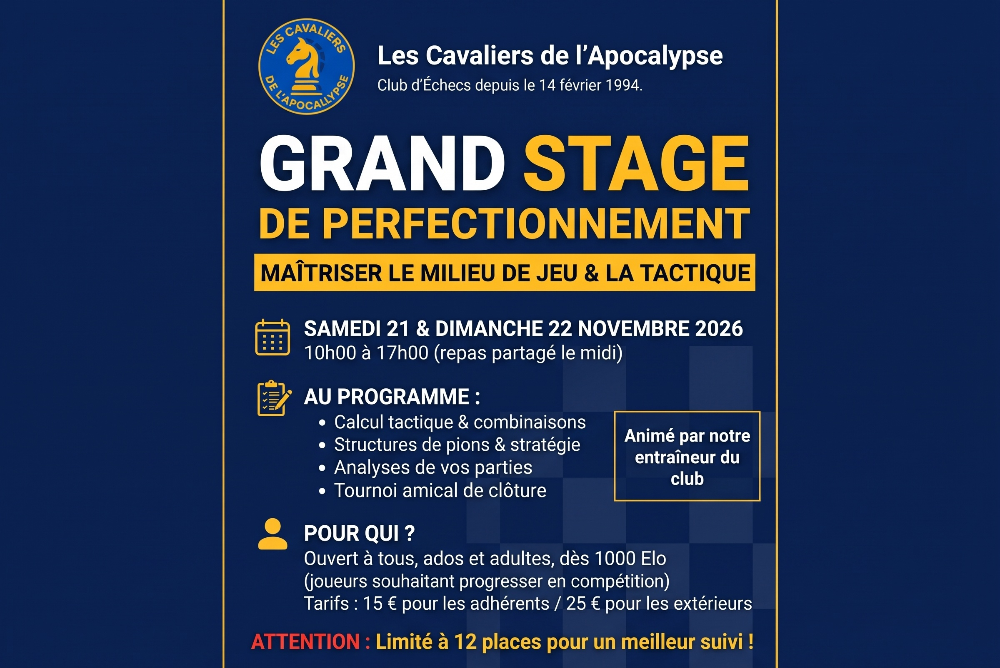

Grand Stage de Perfectionnement : Maîtriser le milieu de jeu & la tactique

Après le lancement enthousiasmant du Tournoi Interne d'Automne, Les Cavaliers de l'Apocalypse ouvrent les portes d'un événement formateur exceptionnel. Les samedi 21 et dimanche 22 novembre 2026, notre club réunit ses licenciés et passionnés de la région pour deux journées d'entraînement intensif dédiées à la phase la plus riche et décisive de l'échiquier : le milieu de jeu.
Pourquoi cibler le milieu de jeu et le calcul tactique ?
Dans la pratique moderne des échecs en compétition, plus de 70% des parties se décident au cours du milieu de jeu. Qu'il s'agisse d'un mauvais plan stratégique, d'un défaut de calcul sur trois coups ou d'une faiblesse de structure non exploitée, c'est précisément dans cette phase critique que les victoires se forgent ou s'envolent.
Ce stage a été méticuleusement conçu pour combler le fossé entre la théorie des ouvertures et les finales techniques. Il s'adresse aux joueurs motivés (dès 1000 Elo jusqu'à 1800 Elo), désireux d'acquérir une méthode de calcul structurée, d'éradiquer les gaffes tactiques et de franchir un cap déterminant dans leur progression officielle FFE.
Le programme pédagogique des deux journées
L'immersion se déroulera sur deux journées complètes de 10h00 à 17h00, alternant exposés théoriques interactifs, exercices sur échiquier avec pendule et analyses de parties réelles :
| Journée | Matin (10h00 - 12h30) | Après-midi (14h00 - 17h00) |
|---|---|---|
| Samedi 21 nov. Calcul & Dynamique |
Détection des motifs tactiques majeurs : clouages relatifs, déviations, attaques à la découverte et élimination du défenseur. | Maîtrise des structures de pions : exploitation du pion isolé en d4, gestion des pions pendants et cassures de chaînes. |
| Dimanche 22 nov. Pratique & Autopsie |
Autopsie individualisée : analyse des feuilles de parties récentes apportées par les stagiaires pour éradiquer les erreurs récurrentes. | Tournoi d'application en cadence rapide (15 min + 5s) avec débriefing immédiat après chaque ronde et remise des fiches d'exercices. |
Un encadrement d'élite et des intervenants chevronnés
Pour assurer un accompagnement pédagogique de premier ordre, la formation sera co-animée par notre entraîneur attitré Dean Stosic (1748 Elo) et le solide compétiteur Ludovic Jean (1787 Elo), tous deux réputés pour leur approche pédagogique bienveillante et pragmatique.
En prime, notre jeune prodige Matteo Grolleau (1882 Elo, 1998 Rapide) interviendra lors de la session dominicale pour proposer une démonstration de blitz commenté en direct, illustrant comment les schémas tactiques vus en cours peuvent être exécutés sous la pression du chronomètre.
Modalités pratiques & Inscriptions (Places limitées)
Dates : Samedi 21 et Dimanche 22 novembre 2026 (10h00 - 17h00 avec pause déjeuner conviviale partagée le midi).
Lieu : Salle principale du club, Espace Associatif, Angers.
Tarif : 15 € pour les adhérents du club / 25 € pour les participants extérieurs.
Attention : Afin de garantir un suivi personnalisé de chaque stagiaire, le nombre de places est strictement limité à 12 participants. Réservations ouvertes à la salle ou par e-mail : lescavaliers@notremail.com.
Sources & mentions :
- Rédaction & visuels : Textes et illustrations élaborés avec l'assistance d'une IA.
- Données sportives : Données réelles issues des licenciés officiels du club (FFE).
- Fédération Française des Échecs (FFE)
- Règles et formation officielle (FIDE)